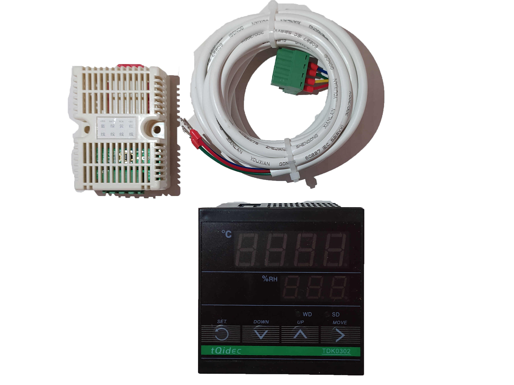

Termostato Controlador Temperatura Digital 110-220v TDK 1000
Precio: 15,00 US$

| Codigo | Caracteristicas | Funciones | Contenido |
|---|---|---|---|
| Xhw1209 | -Condición: NUEVO -Escala de control de temperatura: -50ºC a +99°C (ajustable) -Resolución: 0,1ºC -Precisión: ±1°C (de -50°C a +70°C) -Tipo de sonda NTC -Salida de Relé Calor: 10A [max] 240VAC -Salida de Relé Frio: 10A [max] 240VAC -Alimentación eléctrica: 110-220V AC ± 10% 50Hz/60Hz -Consumo: Menor a 3W -Cambio Automático entre frío y calor -Calibración de temperatura -Temperatura de almacenamiento: -30ºC a +75°C -Dimensiones del aparato: 75x34,5x85mm -Longitud del cable: 1m |
-Termostato Digital con Sonda STC-1000 Control de Temperatura Frio y Calor -Dispone de dos salidas para controlar frio y calor y mantener una temperatura estable en diversas aplicaciones como: *Cava Cuarto *Incubadoras *Acuarios *Terrarios *Cualquier aplicación que necesite un control de temperatura. -En la pantalla LCD dispone de decimales así como en la programación, esto nos ayuda a tener un máximo ajuste a la hora de controlar la temperatura. -Sistema de programación muy sencillo, con solamente 4 parámetros que modificar. -La programación es muy sencilla, solamente hay que marcar la temperatura de trabajo y la histéresis deseada que será el margen de temperatura que se establecerá para accionar las salidas del relé. |
-(01) Controlador Termostato Digital con Sonda STC-1000 -(01) Sonda de medición -(01) Manual de instrucciones |